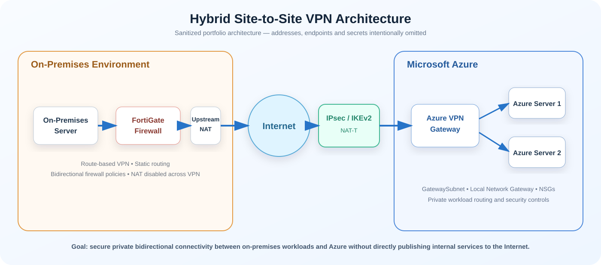

Hybrid Cloud · Networking · Security
Azure Site-to-Site VPN with FortiGate
Designed and implemented secure hybrid connectivity between an on-premises FortiGate environment and Microsoft Azure using a route-based Site-to-Site IPsec VPN, Azure VPN Gateway, IKEv2, static routing and bidirectional firewall policies.
Secure hybrid connectivity without exposing workloads publicly.
The project connected an on-premises server environment protected by a FortiGate firewall to two Azure servers over an encrypted private network path. Azure VPN Gateway terminated the cloud side of the tunnel, while the FortiGate handled the on-premises IPsec connection, routing and security enforcement.
The design intentionally used static routing rather than BGP because the scope contained only a small number of known network prefixes. The implementation also demonstrated successful VPN operation when the FortiGate WAN interface was located behind an upstream NAT device.
Private, controlled access between on-premises and Azure.
Requirement
- Allow an on-premises workload to securely access Azure servers.
- Support return traffic from Azure to the on-premises environment.
- Avoid directly publishing internal Azure workloads to the Internet.
- Apply explicit security and routing controls at both ends.
Delivered Design
- Route-based Site-to-Site IPsec VPN.
- IKEv2 with pre-shared-key authentication.
- Static routing for defined network prefixes.
- FortiGate and Azure security controls for allowed traffic.
FortiGate to Azure VPN Gateway hybrid path.
The sanitized architecture below shows the on-premises server, FortiGate firewall, upstream NAT device, encrypted IPsec/IKEv2 path, Azure VPN Gateway and two Azure workloads.

Figure 1. Sanitized Hybrid Azure Site-to-Site VPN Architecture
Azure VPN resources and cloud-side routing.
Virtual Network
Created or selected the Azure VNet hosting the workload servers and created the required dedicated GatewaySubnet.
VPN Gateway
Deployed a route-based Azure VPN Gateway and configured the Site-to-Site IPsec connection using IKEv2.
Local Network Gateway
Defined the on-premises VPN endpoint and routable on-premises network prefixes in Azure.
IPsec, routing and firewall policy configuration.
VPN Configuration
- Created a route-based IPsec tunnel.
- Bound the tunnel to the Internet-facing interface.
- Configured IKEv2 Phase 1 and matching authentication.
- Configured Phase 2 selectors for protected networks.
Routing & Security
- Added static routes for Azure workload traffic.
- Created on-premises-to-Azure firewall policy.
- Created Azure-to-on-premises firewall policy.
- Disabled NAT across the VPN to preserve private source addresses.
Encrypted request and return traffic.
The FortiGate evaluates whether the source, destination and required service are permitted.
The routing table selects the IPsec tunnel for the Azure workload network.
Traffic is encrypted across the Internet and decrypted by Azure VPN Gateway.
Azure routing and security controls determine whether the connection can reach the selected server.
Return traffic follows the same encrypted hybrid path back to the originating workload.
Issues resolved during implementation.
Missing GatewaySubnet
The initial Azure VPN Gateway deployment failed because the required GatewaySubnet did not exist. Creating the correctly named dedicated subnet resolved the deployment issue.
FortiGate Behind NAT
The FortiGate used a private WAN address behind an upstream router. The design used the site's public endpoint and NAT Traversal to establish the IPsec session successfully.
Tunnel Up, Traffic Down
Troubleshooting separated tunnel state from workload connectivity by checking Phase 2 selectors, routing, firewall policy, Azure effective routes, NSGs and endpoint firewalls.
Validated more than just tunnel status.
- Confirmed Azure reported the Site-to-Site connection as connected.
- Confirmed FortiGate Phase 1 and Phase 2 were active.
- Validated the VPN interface was selected for Azure workload routes.
- Tested connectivity from on-premises to both Azure servers.
- Validated return traffic from Azure to the on-premises server.
- Tested required application ports in addition to ICMP.
- Used packet capture to verify bidirectional traffic flow across expected interfaces.
Secure, reusable hybrid-cloud connectivity.
Azure networking, FortiGate and hybrid-cloud troubleshooting.
Technologies: Microsoft Azure VPN Gateway, Azure Virtual Networks, GatewaySubnet, Local Network Gateway, FortiGate/FortiOS, IPsec, IKEv2, static routing, firewall policies, Azure NSGs, NAT Traversal, packet capture and effective-route analysis.
Operational skills: hybrid-cloud architecture, secure routing, connectivity validation, troubleshooting, documentation, security hardening and production-readiness thinking.
Project status
Completed